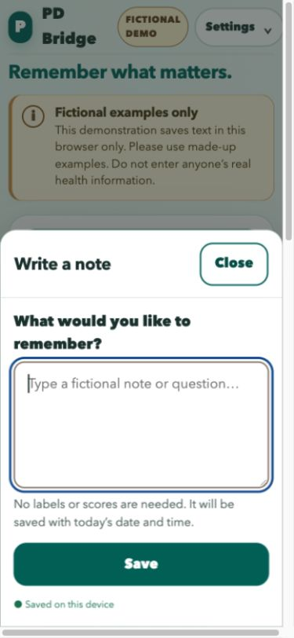
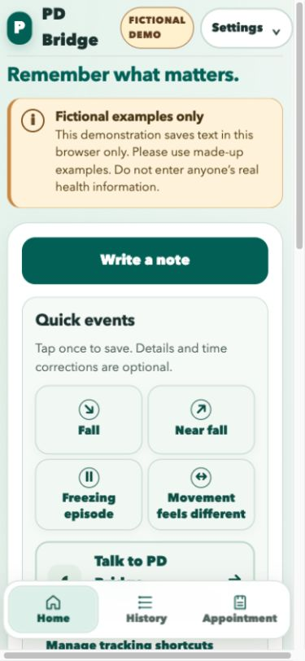
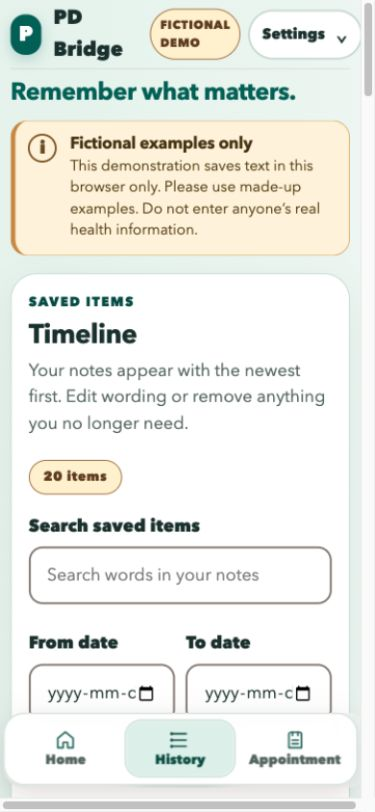
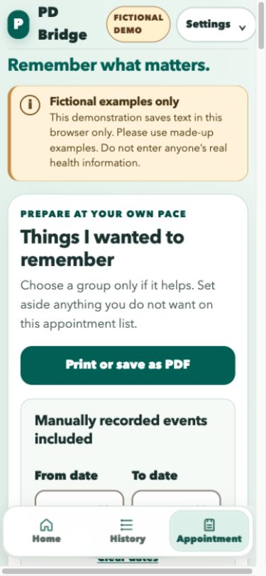
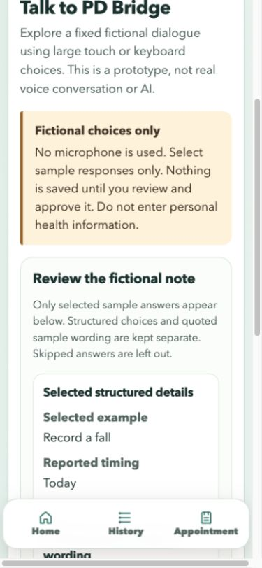
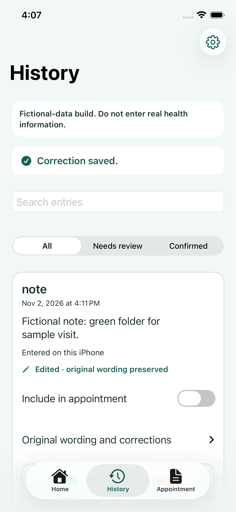
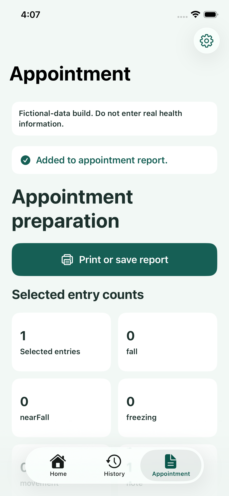
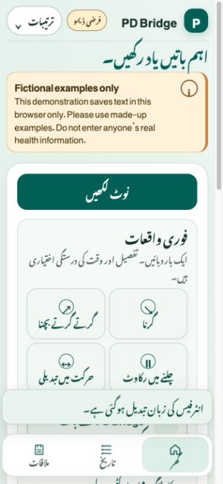

01 / Capture
Write a note or save a quick event.
The browser app supports notes and one-tap fictional event shortcuts. It confirms saves, allows corrections, and offers immediate undo for quick events.
Implemented in browser
Independent product · Evolving prototype · Fictional data
PD Bridge explores a calmer way for people living with Parkinson's and their caregivers to record observations, review changes over time, and prepare a clearer appointment conversation.
Designed and developed by Tanvi Punjani. A fictional-data software prototype; not a clinical product or patient-ready service.

The product question
Symptoms and changes can be hard to recall when an appointment finally arrives. A person may remember a fall or a difficult afternoon, while a caregiver remembers a different detail. PD Bridge started as my attempt to make that record easier to capture and easier to review together.
The product is designed around two needs: low-friction entry in the moment and a human-reviewed summary later. It avoids turning fictional observations into automatic clinical conclusions.
Product walkthrough
These are archived captures of the local prototypes using fictional examples. They show implemented interface work, not a public patient service.
The browser app supports notes and one-tap fictional event shortcuts. It confirms saves, allows corrections, and offers immediate undo for quick events.
Implemented in browser
Versioned local entries preserve changes and original wording. Search and timeline views help a person revisit what they recorded without implying that gaps are symptom-free days.
Implemented in browser
An appointment view assembles saved, human-reviewed entries and factual counts. Entries can be included or set aside; the interface does not diagnose or recommend treatment. This can support a person and caregiver reviewing the same record together; there is no caregiver account or sharing service.
Implemented in browser
Talk to PD Bridge uses fixed fictional choices, large touch or keyboard controls, and a final review screen. It can read a prompt aloud through an installed browser voice after a click. It does not record voice, recognize speech, or call an AI model.
Scripted browser prototype
Separate SwiftUI prototype
The iPhone and Apple Watch project is a separate implementation. Its code routes a fixed fictional Watch event through a durable outbox to phone validation, then sends a final receipt only after a successful encrypted vault write. Duplicate deliveries are recognized; failed writes leave the event available for retry.
SwiftUI Home, History, Appointment, and Settings screens, a local encrypted vault, and backup/deletion flows are implemented and tested locally. Physical iPhone/Watch transfer and file-protection behavior still require hardware verification.
Local native prototype · hardware unverified

Engineering decisions
The architecture separates simple capture from more ambitious research ideas, and makes confirmation visible at each step.
HTML, CSS, and JavaScript modules render the interface and manage browser-local state. The version 3 storage envelope retains original wording, edit history, event metadata, and appointment inclusion; it migrates earlier demo records. Local storage holds fictional entries only. There is no account, cloud database, production API, or model request in this path.
SwiftUI screens use a local observation service and an AES-GCM vault with a device-only Keychain key. The fixed-event transfer code uses WatchConnectivity. The browser and native projects do not share a production service. The Watch action does not detect falls; the end-to-end transfer is unverified on paired hardware.
Scripted Talk offers fixed choices and a review screen before saving. This keeps the prototype useful without claiming speech recognition or clinical inference.
Native contract tests inject storage and lock-state failures. A failed write cannot generate a stored receipt; duplicate event delivery cannot create a second entry.
Comfort Mode increases text and control size. English is the source language; Gujarati, Hindi, and Urdu are draft resources. Urdu uses right-to-left layout. Fluent review and screen-reader testing remain open.
Product iteration
During local browser QA at 320px, the quick-event actions sat below the capture form and required scrolling. I moved the quick-event tiles and Talk entry ahead of Quick Capture on mobile, keeping the DOM order aligned with the visual order. The change made time-sensitive actions easier to reach without adding a separate interaction path.
Accessible by design, still under review
Large controls, reduced visual density in Comfort Mode, responsive layouts, and right-to-left interface handling are present in the browser work. Notes retain their original text rather than being automatically translated.
These are design and implementation choices, not a claim of certified accessibility or validated translation.

Verification & roadmap
My role
I framed the product problem, built and iterated the browser and SwiftUI prototypes, and used documented tests to work through capture, event reliability, and local data boundaries. Development included AI-assisted coding; this case study describes repository-verified functionality rather than claiming solo authorship of every line.
More about my engineering work ↗